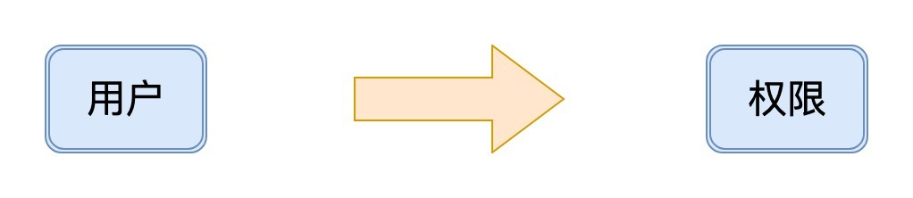
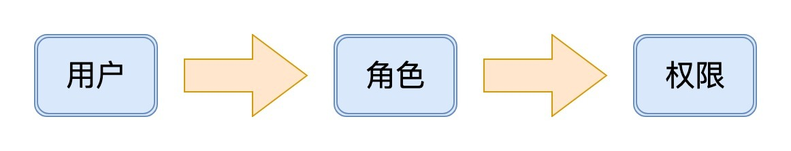
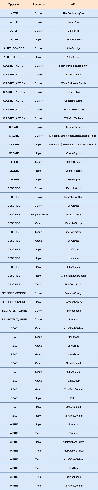
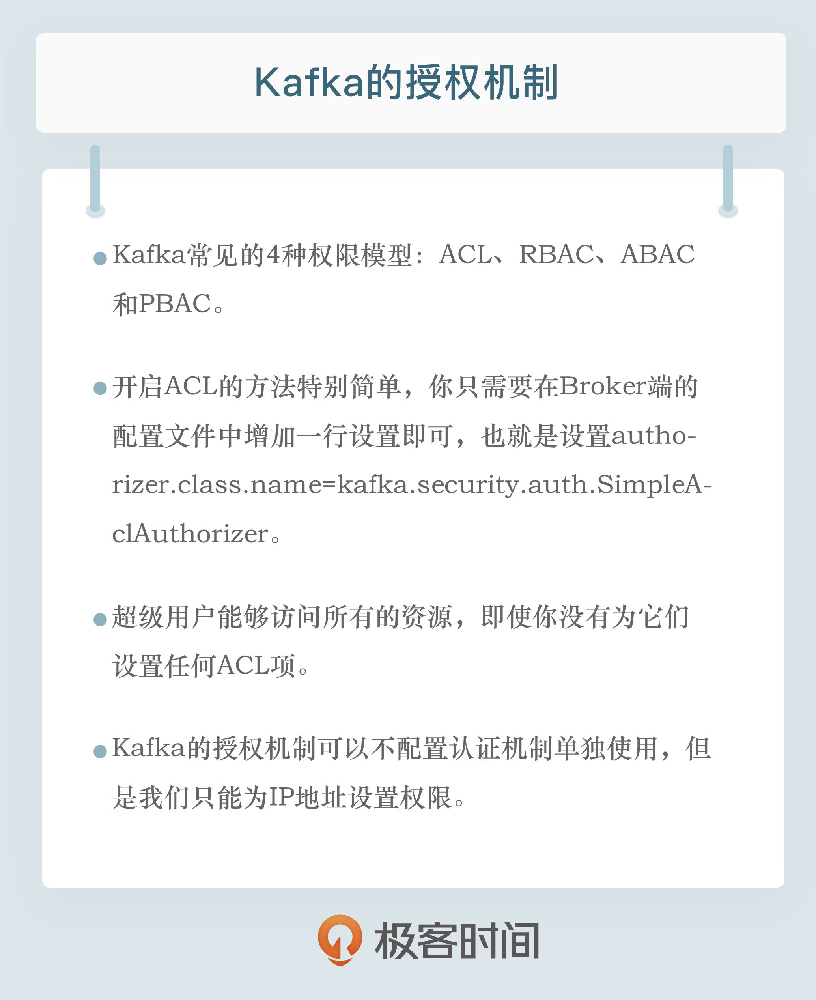

- 00 开篇词 为什么要学习Kafka？.md.html
- 01 消息引擎系统ABC.md.html
- 02 一篇文章带你快速搞定Kafka术语.md.html
- 03 Kafka只是消息引擎系统吗？.md.html
- 04 我应该选择哪种Kafka？.md.html
- 05 聊聊Kafka的版本号.md.html
- 06 Kafka线上集群部署方案怎么做？.md.html
- 07 最最最重要的集群参数配置（上）.md.html
- 08 最最最重要的集群参数配置（下）.md.html
- 09 生产者消息分区机制原理剖析.md.html
- 10 生产者压缩算法面面观.md.html
- 11 无消息丢失配置怎么实现？.md.html
- 12 客户端都有哪些不常见但是很高级的功能？.md.html
- 13 Java生产者是如何管理TCP连接的？.md.html
- 14 幂等生产者和事务生产者是一回事吗？.md.html
- 15 消费者组到底是什么？.md.html
- 16 揭开神秘的“位移主题”面纱.md.html
- 17 消费者组重平衡能避免吗？.md.html
- 18 Kafka中位移提交那些事儿.md.html
- 19 CommitFailedException异常怎么处理？.md.html
- 20 多线程开发消费者实例.md.html
- 21 Java 消费者是如何管理TCP连接的_.md.html
- 22 消费者组消费进度监控都怎么实现？.md.html
- 23 Kafka副本机制详解.md.html
- 24 请求是怎么被处理的？.md.html
- 25 消费者组重平衡全流程解析.md.html
- 26 你一定不能错过的Kafka控制器.md.html
- 27 关于高水位和Leader Epoch的讨论.md.html
- 28 主题管理知多少_.md.html
- 29 Kafka动态配置了解下？.md.html
- 30 怎么重设消费者组位移？.md.html
- 31 常见工具脚本大汇总.md.html
- 32 KafkaAdminClient：Kafka的运维利器.md.html
- 33 Kafka认证机制用哪家？.md.html
- 34 云环境下的授权该怎么做？.md.html
- 35 跨集群备份解决方案MirrorMaker.md.html
- 36 你应该怎么监控Kafka？.md.html
- 37 主流的Kafka监控框架.md.html
- 38 调优Kafka，你做到了吗？.md.html
- 39 从0搭建基于Kafka的企业级实时日志流处理平台.md.html
- 40 Kafka Streams与其他流处理平台的差异在哪里？.md.html
- 41 Kafka Streams DSL开发实例.md.html
- 42 Kafka Streams在金融领域的应用.md.html
- 加餐 搭建开发环境、阅读源码方法、经典学习资料大揭秘.md.html
- 用户故事 黄云：行百里者半九十.md.html
- 结束语 以梦为马，莫负韶华！.md.html
- 捐赠
34 云环境下的授权该怎么做？
你好，我是胡夕。今天我要分享的主题是：Kafka的授权机制。
什么是授权机制？
我们在上一讲中花了不少时间讨论Kafka的认证机制，今天我们来看看Kafka的授权机制（Authorization）。所谓授权，一般是指对与信息安全或计算机安全相关的资源授予访问权限，特别是存取控制。
具体到权限模型，常见的有四种。
- ACL：Access-Control List，访问控制列表。
- RBAC：Role-Based Access Control，基于角色的权限控制。
- ABAC：Attribute-Based Access Control，基于属性的权限控制。
- PBAC：Policy-Based Access Control，基于策略的权限控制。
在典型的互联网场景中，前两种模型应用得多，后面这两种则比较少用。
ACL模型很简单，它表征的是用户与权限的直接映射关系，如下图所示：

而RBAC模型则加入了角色的概念，支持对用户进行分组，如下图所示：

Kafka没有使用RBAC模型，它用的是ACL模型。简单来说，这种模型就是规定了什么用户对什么资源有什么样的访问权限。我们可以借用官网的一句话来统一表示这种模型：“Principal P is [Allowed/Denied] Operation O From Host H On Resource R.” 这句话中出现了很多个主体，我来分别解释下它们的含义。
- Principal：表示访问Kafka集群的用户。
- Operation：表示一个具体的访问类型，如读写消息或创建主题等。
- Host：表示连接Kafka集群的客户端应用程序IP地址。Host支持星号占位符，表示所有IP地址。
- Resource：表示Kafka资源类型。如果以最新的2.3版本为例，Resource共有5种，分别是TOPIC、CLUSTER、GROUP、TRANSACTIONALID和DELEGATION TOKEN。
当前，Kafka提供了一个可插拔的授权实现机制。该机制会将你配置的所有ACL项保存在ZooKeeper下的/kafka-acl节点中。你可以通过Kafka自带的kafka-acls脚本动态地对ACL项进行增删改查，并让它立即生效。
如何开启ACL？
在Kafka中，开启ACL的方法特别简单，你只需要在Broker端的配置文件中增加一行设置即可，也就是在server.properties文件中配置下面这个参数值：
authorizer.class.name=kafka.security.auth.SimpleAclAuthorizer
authorizer.class.name参数指定了ACL授权机制的实现类。当前Kafka提供了Authorizer接口，允许你实现你自己的授权机制，但更常见的做法，还是直接使用Kafka自带的SimpleAclAuthorizer实现类。一旦设置好这个参数的值，并且启动Broker后，该Broker就默认开启了ACL授权验证。在实际生产环境中，你需要为集群中的每台Broker都做此设置。
超级用户（Super User）
在开启了ACL授权之后，你还必须显式地为不同用户设置访问某项资源的权限，否则，在默认情况下，没有配置任何ACL的资源是不能被访问的。不过，这里也有一个例外：超级用户能够访问所有的资源，即使你没有为它们设置任何ACL项。
那么，我们如何在一个Kafka集群中设置超级用户呢？方法很简单，只需要在Broker端的配置文件server.properties中，设置super.users参数即可，比如：
super.users=User:superuser1;User:superuser2
注意，如果你要一次性指定多个超级用户，那么分隔符是分号而不是逗号，这是为了避免出现用户名中包含逗号从而无法分割的问题。
除了设置super.users参数，Kafka还支持将所有用户都配置成超级用户的用法。如果我们在server.properties文件中设置allow.everyone.if.no.acl.found=true，那么所有用户都可以访问没有设置任何ACL的资源。不过，我个人不太建议进行这样的设置。毕竟，在生产环境中，特别是在那些对安全有较高要求的环境中，采用白名单机制要比黑名单机制更加令人放心。
kafka-acls脚本
在了解了Kafka的ACL概念之后，我们来看一下如何设置它们。当前在Kafka中，配置授权的方法是通过kafka-acls脚本。举个例子，如果我们要为用户Alice增加了集群级别的所有权限，那么我们可以使用下面这段命令。
$ kafka-acls --authorizer-properties zookeeper.connect=localhost:2181 --add --allow-principal User:Alice --operation All --topic '*' --cluster
在这个命令中，All表示所有操作，topic中的星号则表示所有主题，指定 –cluster则说明我们要为Alice设置的是集群权限。
这个脚本的参数有很多，我们再来看看它的另一个常见用法。
$ bin/kafka-acls --authorizer-properties zookeeper.connect=localhost:2181 --add --allow-principal User:'*' --allow-host '*' --deny-principal User:BadUser --deny-host 10.205.96.119 --operation Read --topic test-topic
User后面的星号表示所有用户，allow-host后面的星号则表示所有IP地址。这个命令的意思是，允许所有的用户使用任意的IP地址读取名为test-topic的主题数据，同时也禁止BadUser用户和10.205.96.119的IP地址访问test-topic下的消息。
kafka-acls脚本还有其他的功能，比如删除ACL、查询已有ACL等。它们的实际用法与上面这条命令类似，我在这里就不一一列举了，你可以使用kafka-acls.sh来查询它的所有用法。
ACL权限列表
刚才的这两条命令，分别涉及了主题的集群权限和读权限。你可能会问，Kafka到底提供了多少种ACL权限呢？我们一起来看看下面这张表格，它完整地展示了Kafka所有的ACL权限。

看到这么大一张表格，你是不是很惊讶？其实，这恰好证明Kafka当前提供的授权机制是非常细粒度的。现在，我来跟你分享一下这个表格的使用方法。
举个例子，假如你要为你的生产者程序赋予写权限，那么首先，你要在Resource列找到Topic类型的权限，然后在Operation列寻找WRITE操作权限。这个WRITE权限是限制Producer程序能否向对应主题发送消息的关键。通常情况下，Producer程序还可能有创建主题、获取主题数据的权限，所以Kafka为Producer需要的这些常见权限创建了快捷方式，即 –producer。也就是说，在执行kafka-acls命令时，直接指定 –producer就能同时获得这三个权限了。 –consumer也是类似的，指定 –consumer可以同时获得Consumer端应用所需的权限。
授权机制能否单独使用？
关于授权，有一个很常见的问题是，Kafka授权机制能不配置认证机制而单独使用吗？其实，这是可以的，只是你只能为IP地址设置权限。比如，下面这个命令会禁止运行在127.0.0.1IP地址上的Producer应用向test主题发送数据：
$ bin/kafka-acls.sh --authorizer-properties zookeeper.connect=localhost:2181 --add --deny-principal User:* --deny-host 127.0.0.1 --operation Write --topic test
$ bin/kafka-console-producer.sh --broker-list localhost:9092 --topic test
>hello
[2019-07-16 10:10:57,283] WARN [Producer clientId=console-producer] Error while fetching metadata with correlation id 3 : {test=TOPIC_AUTHORIZATION_FAILED} (org.apache.kafka.clients.NetworkClient)
[2019-07-16 10:10:57,284] ERROR [Producer clientId=console-producer] Topic authorization failed for topics [test] (org.apache.kafka.clients.Metadata)
[2019-07-16 10:10:57,284] ERROR Error when sending message to topic test with key: null, value: 5 bytes with error: (org.apache.kafka.clients.producer.internals.ErrorLoggingCallback)
org.apache.kafka.common.errors.TopicAuthorizationException: Not authorized to access topics: [test]
请注意一下输出中的橙色字体部分。虽然没有设置任何认证机制，但是通过设置IP地址的ACL授权，我们依然可以禁止这些IP地址上的客户端访问Kafka资源。不过，尽管授权机制能够有限度地单独使用，但我更推荐的做法是，和我们在专栏上一讲提到的认证机制搭配使用。
接下来，我来给出一个SSL + ACL配置的实例，来演示一下云环境下的ACL授权应该怎么做。
配置实例
在演示ACL之前，我先简单说一下SSL的配置。我给出一个SHELL脚本，它可以方便你设置SSL，代码如下：
#!/bin/bash
#设置环境变量
BASE_DIR=/Users/huxi/testenv #你需要修改此处
CERT_OUTPUT_PATH="$BASE_DIR/certificates"
PASSWORD=test1234
KEY_STORE="$CERT_OUTPUT_PATH/server.keystore.jks"
TRUST_STORE="$CERT_OUTPUT_PATH/server.truststore.jks"
CLIENT_KEY_STORE="$CERT_OUTPUT_PATH/client.keystore.jks"
CLIENT_TRUST_STORE="$CERT_OUTPUT_PATH/client.truststore.jks"
KEY_PASSWORD=$PASSWORD
STORE_PASSWORD=$PASSWORD
TRUST_KEY_PASSWORD=$PASSWORD
TRUST_STORE_PASSWORD=$PASSWORD
CERT_AUTH_FILE="$CERT_OUTPUT_PATH/ca-cert"
DAYS_VALID=365
DNAME="CN=Xi Hu, OU=YourDept, O=YourCompany, L=Beijing, ST=Beijing, C=CN"
mkdir -p $CERT_OUTPUT_PATH
echo "1. 产生key和证书......"
keytool -keystore $KEY_STORE -alias kafka-server -validity $DAYS_VALID -genkey -keyalg RSA \
-storepass $STORE_PASSWORD -keypass $KEY_PASSWORD -dname "$DNAME"
keytool -keystore $CLIENT_KEY_STORE -alias kafka-client -validity $DAYS_VALID -genkey -keyalg RSA \
-storepass $STORE_PASSWORD -keypass $KEY_PASSWORD -dname "$DNAME"
echo "2. 创建CA......"
openssl req -new -x509 -keyout $CERT_OUTPUT_PATH/ca-key -out "$CERT_AUTH_FILE" -days "$DAYS_VALID" \
-passin pass:"$PASSWORD" -passout pass:"$PASSWORD" \
-subj "/C=CN/ST=Beijing/L=Beijing/O=YourCompany/OU=YourDept,CN=Xi Hu"
echo "3. 添加CA文件到broker truststore......"
keytool -keystore "$TRUST_STORE" -alias CARoot \
-importcert -file "$CERT_AUTH_FILE" -storepass "$TRUST_STORE_PASSWORD" -keypass "$TRUST_KEY_PASS" -noprompt
echo "4. 添加CA文件到client truststore......"
keytool -keystore "$CLIENT_TRUST_STORE" -alias CARoot \
-importcert -file "$CERT_AUTH_FILE" -storepass "$TRUST_STORE_PASSWORD" -keypass "$TRUST_KEY_PASS" -noprompt
echo "5. 从keystore中导出集群证书......"
keytool -keystore "$KEY_STORE" -alias kafka-server -certreq -file "$CERT_OUTPUT_PATH/server-cert-file" \
-storepass "$STORE_PASSWORD" -keypass "$KEY_PASSWORD" -noprompt
keytool -keystore "$CLIENT_KEY_STORE" -alias kafka-client -certreq -file "$CERT_OUTPUT_PATH/client-cert-file" \
-storepass "$STORE_PASSWORD" -keypass "$KEY_PASSWORD" -noprompt
echo "6. 使用CA签发证书......"
openssl x509 -req -CA "$CERT_AUTH_FILE" -CAkey $CERT_OUTPUT_PATH/ca-key -in "$CERT_OUTPUT_PATH/server-cert-file" \
-out "$CERT_OUTPUT_PATH/server-cert-signed" -days "$DAYS_VALID" -CAcreateserial -passin pass:"$PASSWORD"
openssl x509 -req -CA "$CERT_AUTH_FILE" -CAkey $CERT_OUTPUT_PATH/ca-key -in "$CERT_OUTPUT_PATH/client-cert-file" \
-out "$CERT_OUTPUT_PATH/client-cert-signed" -days "$DAYS_VALID" -CAcreateserial -passin pass:"$PASSWORD"
echo "7. 导入CA文件到keystore......"
keytool -keystore "$KEY_STORE" -alias CARoot -import -file "$CERT_AUTH_FILE" -storepass "$STORE_PASSWORD" \
-keypass "$KEY_PASSWORD" -noprompt
keytool -keystore "$CLIENT_KEY_STORE" -alias CARoot -import -file "$CERT_AUTH_FILE" -storepass "$STORE_PASSWORD" \
-keypass "$KEY_PASSWORD" -noprompt
echo "8. 导入已签发证书到keystore......"
keytool -keystore "$KEY_STORE" -alias kafka-server -import -file "$CERT_OUTPUT_PATH/server-cert-signed" \
-storepass "$STORE_PASSWORD" -keypass "$KEY_PASSWORD" -noprompt
keytool -keystore "$CLIENT_KEY_STORE" -alias kafka-client -import -file "$CERT_OUTPUT_PATH/client-cert-signed" \
-storepass "$STORE_PASSWORD" -keypass "$KEY_PASSWORD" -noprompt
echo "9. 删除临时文件......"
rm "$CERT_OUTPUT_PATH/ca-cert.srl"
rm "$CERT_OUTPUT_PATH/server-cert-signed"
rm "$CERT_OUTPUT_PATH/client-cert-signed"
rm "$CERT_OUTPUT_PATH/server-cert-file"
rm "$CERT_OUTPUT_PATH/client-cert-file"
你可以把上面的代码保存成一个SHELL脚本，然后在一台Broker上运行。该脚本主要的产出是4个文件，分别是：server.keystore.jks、server.truststore.jks、client.keystore.jks和client.truststore.jks。
你需要把以server开头的两个文件，拷贝到集群中的所有Broker机器上，把以client开头的两个文件，拷贝到所有要连接Kafka集群的客户端应用程序机器上。
接着，你要配置每个Broker的server.properties文件，增加以下内容：
listeners=SSL://localhost:9093
ssl.truststore.location=/Users/huxi/testenv/certificates/server.truststore.jks
ssl.truststore.password=test1234
ssl.keystore.location=/Users/huxi/testenv/certificates/server.keystore.jks
ssl.keystore.password=test1234
security.inter.broker.protocol=SSL
ssl.client.auth=required
ssl.key.password=test1234
现在我们启动Broker进程。倘若你发现无法启动或启动失败，那么你需要检查一下报错信息，看看和上面的哪些配置有关，然后有针对性地进行调整。接下来，我们来配置客户端的SSL。
首先，我们要创建一个名为client-ssl.config的文件，内容如下：
security.protocol=SSL
ssl.truststore.location=/Users/huxi/testenv/certificates/client.truststore.jks
ssl.truststore.password=test1234
ssl.keystore.location=/Users/huxi/testenv/certificates/server.keystore.jks
ssl.keystore.password=test1234
ssl.key.password=test1234
ssl.endpoint.identification.algorithm=
注意，一定要加上最后一行。因为自Kafka 2.0版本开始，它默认会验证服务器端的主机名是否匹配Broker端证书里的主机名。如果你要禁掉此功能的话，一定要将该参数设置为空字符串。
配置好这些，你可以使用ConsoleConsumer和ConsoleProducer来测试一下Producer和Consumer是否能够正常工作。比如，下列命令指定producer-config指向刚才我们创建的client-ssl配置文件。
$ bin/kafka-console-producer.sh --broker-list localhost:9093 --topic test --producer.config client-ssl.config
好了，现在我们来说说ACL的配置。
如果你在运营一个云上的Kafka集群，那么势必会面临多租户的问题。除了设置合理的认证机制外，为每个连接Kafka集群的客户端授予恰当的权限，也是非常关键的。现在我来给出一些最佳实践。
第一，就像前面说的，要开启ACL，你需要设置authorizer.class.name=kafka.security.auth.SimpleAclAuthorizer。
第二，我建议你采用白名单机制，这样的话，没有显式设置权限的用户就无权访问任何资源。也就是说，在Kafka的server.properties文件中，不要设置allow.everyone.if.no.acl.found=true。
第三，你可以使用kafka-acls脚本为SSL用户授予集群的权限。我们以前面的例子来进行一下说明。
在配置SSL时，我们指定用户的Distinguished Name为“CN=Xi Hu, OU=YourDept, O=YourCompany, L=Beijing, ST=Beijing, C=CN”。之前在设置Broker端参数时，我们指定了security.inter.broker.protocol=SSL，即强制指定Broker间的通讯也采用SSL加密。
如果不为指定的Distinguished Name授予集群操作的权限，你是无法成功启动Broker的。因此，你需要在启动Broker之前执行下面的命令：
$ bin/kafka-acls.sh --authorizer-properties zookeeper.connect=localhost:2181 --add --allow-principal User:"CN=Xi Hu,OU=YourDept,O=YourCompany,L=Beijing,ST=Beijing,C=CN" --operation All --cluster
第四，你要为客户端程序授予相应的权限，比如为生产者授予producer权限，为消费者授予consumer权限。假设客户端要访问的主题名字是test，那么命令如下：
$ bin/kafka-acls.sh --authorizer-properties zookeeper.connect=localhost:2181 --add --allow-principal User:"CN=Xi Hu,OU=YourDept,O=YourCompany,L=Beijing,ST=Beijing,C=CN" --producer --topic 'test'
$ bin/kafka-acls.sh --authorizer-properties zookeeper.connect=localhost:2181 --add --allow-principal User:"CN=Xi Hu,OU=YourDept,O=YourCompany,L=Beijing,ST=Beijing,C=CN" --consumer --topic 'test' --group '*'
注意这两条命令中的 –producer和 –consumer，它们类似于一个快捷方式，直接将Producer和Consumer常用的权限进行了一次性的授予。
作为云环境PaaS管理员，除了以上这些必要的权限，你最好不要把其他权限授予客户端，比如创建主题的权限。总之，你授予的权限越少，你的Kafka集群就越安全。
小结
讲到这里，我们就完整地把Kafka授权机制梳理了一遍。除此之外，我还附赠了SSL端配置方法。希望你能将这两讲关于安全配置的内容结合起来学习，打造一个超级安全的Kafka集群。

开放讨论
Kafka提供的权限有很多种，我们今天讨论的内容只覆盖了其中最重要的几个权限。如果要让一个客户端能够查询消费者组的提交位移数据，你觉得应该授予它什么权限？
欢迎写下你的思考和答案，我们一起讨论。如果你觉得有所收获，也欢迎把文章分享给你的朋友。
© 2019 - 2023 Liangliang Lee. Powered by gin and hexo-theme-book.